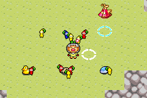
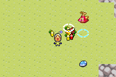

This is a small-scale project I made to test out some features within Butano and to see the limitations of the console. A big personal draw to me is that making a game that will run smoothly on the GBA means I will have to focus a lot on optimisations.

The “game” itself simply features the player and some Pikmin of which they can send to the treasures and then once enough Pikmin are on the treasure, they will carry it back to the ship.

In the demo I also tested the size of the map, I was able to achieve seamless loading between areas, in theory this will let the player explore gigantic maps if I want to create large areas in my next GBA project.